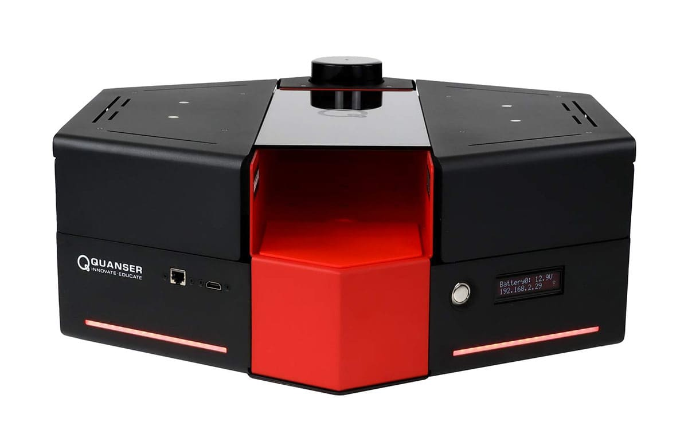

We evaluate in a ROS2 Humble simulation with fake_vicon, fake_odom, and rviz2. The MCTS planner runs with UCB node selection over a 3-second horizon.
Poster-reported directional prediction accuracy:
| Trajectory Type |
Accuracy |
| Straight |
96.1% |
| Left Turn |
75.8% |
| Right Turn |
77.4% |
| Overall |
90.1% |
- Paper-reported comparison: MCTS-DRL outperforms standalone MCTS and DRL in circular and S-shaped simulation trajectories.
- In obstacle-free real-world tests, MCTS-DRL achieves comparable follow-ahead distance/orientation behavior to LBGP.
- In obstacle-present settings, the robot adapts path choices to avoid both collisions and occlusions.
ROS1 to ROS2 Migration
- This replication ports a ROS1-oriented methodology into a ROS2 Humble simulation workflow.
- The core planning logic (MCTS expansion, DRL value lookup, collision/occlusion pruning) is preserved while interfaces are adapted to ROS2 nodes and topics.
- Validation currently focuses on simulation-level behavior parity; hardware deployment remains future work.

Quanser QBot platform for planned real-world validation.